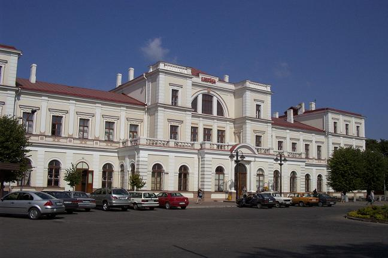
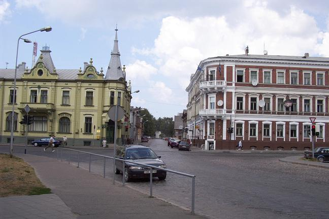
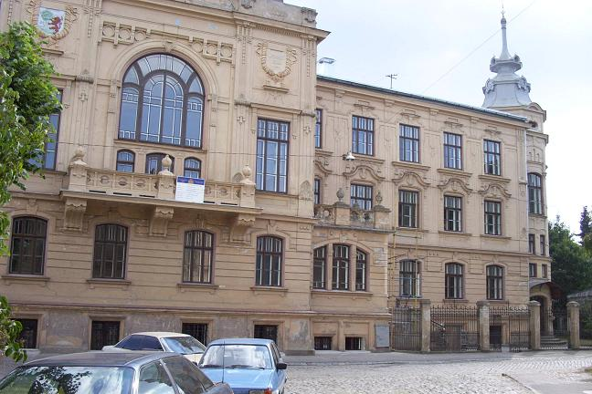
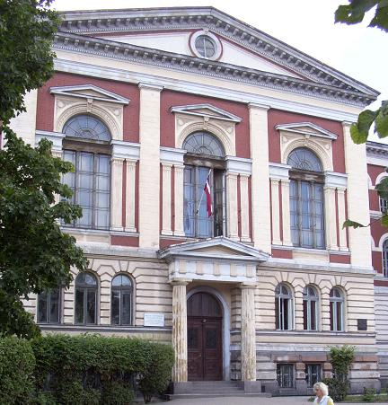

The first picture shows the beautifully restored train station of Liepaja, serving a city of some 90,000 inhabitants that is the third largest in Latvia, located some 225km southwest of the capital city of Riga. This station was the terminus for a rail line that went deep into Russian territory – all the way to Omsk, near Siberia.

The second picture is of an intersection (Kurmajas and Graudu) with, on the left, the former offices and passenger hall for the Russian-East Asian Shipping Company, a building from the 1910s.

The third picture is of the Liepaja Marine School, built in the 1870s.

The fourth picture is of the Nicolai Grammar School, built in the 1880s, a school for boys that became the state technical school after World War I. When the Porzecanskis were of school age, high schools had a quota for Jews such that no more than 10% of students could be Jewish; universities had an even lower quota, and thus many Jews converted to Christianity for the sole purpose of gaining admission, and would come back to the Jewish community upon graduation.

Continue on to Liepaja, Part 2
Back to the Liepaja Section
Back to the trip homepage